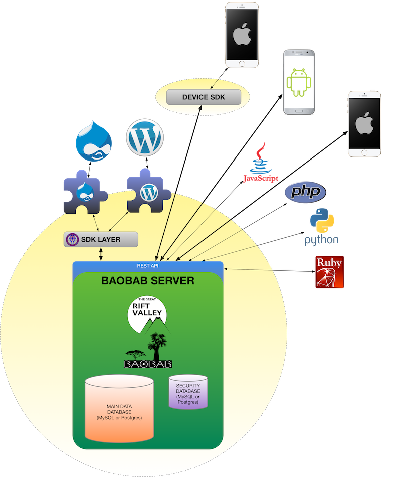

View on GitHub
View on GitHub
 WhiteDragon Reference
WhiteDragon Reference
THE GREAT RIFT VALLEY PLATFORM COCOA SDK LIBRARY (WHITE DRAGON)
Part of the Rift Valley Platform
INTRODUCTION
The WHITE DRAGON IOS SDK Layer is a general-purpose Cocoa ORM for the BAOBAB Server. It uses the REST API to communicate with the Server, and presents the server as a Swift Object Model for use by iOS/MacOS Swift applications. 
ABOUT THE GREAT RIFT VALLEY PLATFORM
The Great Rift Valley Platform is a combined system of a central server (called “The BAOBAB Server”), providing a published API (Application Programming Interface), which is accessible via the Internet, and various “endpoint” apps, such as WordPress plugins and iPhone apps that connect to the server, and allow interpretation and andministration by end-users.
The server contains data. This data has the following characteristics:
There are two separate databases: One is a “big” database that contains the actual data, and the other contains logins (the user has a login ID and a password), along with what are called “security tokens.” These databases can be entirely different servers and/or technologies.
Security tokens are simple integers that logins “own.” If the login has this token (they can have a number of them), then a user that is logged in with that login will have either read/write, or read-only access to other logins in the security database, or data items in the main data database.
Every item, in either database, has a read token and a write token. This is a single security token in each field. They can be the same. If a user has a write token, then they also can read. If they only have a read token, then they cannot modify the item, and may not be allowed to see a “raw” location (more on that in a bit).
It is possible to allow any user (not just logged-in ones) read access to any data item, but non-logged-in users can never modify items. It is also possible to set item read tokens to allow any logged-in user to access the item (but no non-logged-in users). Of course, you can get a great deal more restrictive. Any data item can only have one token in the read slot, and one token in the write slot. You allow multiple logins to access these by giving the same token to multiple logins.
SECURITY DATABASE:
This contains either simple security tokens (items with no login information) or login records.
A login record has a login ID (a string) and a password (stored in a secure hash format. We don’t store cleartext passwords). When a user logs in, the login session is also stored in the security database. It is timed, so the user has only a certain duration before they need to refresh their login, or they will be automatically booted.
Logins can be either regular logins (can log in, see and modify records), or a “manager” login (can create other logins. Any login with the appropriate write security token can edit other logins, but only managers can create or delete other logins).
One login (any type) can be “promoted” by the server administrator to be the “God” login. This login has full rights to everything. It is also given a different login timeout (usually shorter than the regular one). The “promotion” is actually done in code, on the server. There is a configuration file that is edited to do this.
All security database items (including logins) have a unique ID. This ID is a security token. By simply existing, a login has at least one token (its ID), but you can add a list of more tokens.
Security tokens are enforced at a very low level in the system. If a user does not have the requisite token to view an asset, then that asset is never even accessed in the database. It is “invisible” to the user. Additionally, the user is never informed of the existence of tokens they don’t “own.” They just never see them.
DATA DATABASE:
There are three kinds of default assets in the data database: People, Places and Things.
PEOPLE:
People are “users.” These can be associated with logins, but are not required to be associated with them, so you can have records of people that do not have access to the server. Additionally, logins do not have to have associated user objects. Associated user objects allow you to attach a lot more information to a login than what is provided by the security database; which is very simple.
PLACES:
Places are locations. They have addresses.
THINGS:
Things are fairly basic data “shoeboxes.” They can be accessed by “keys,” which are strings. You can attach pretty much any kind of data to a thing.
APPLIES TO ALL TYPES OF DATA DATABASE RECORDS:
Every item in the data database: Person, Place, Thing, has a set of common features. Some items are optimized to highlight certain data types, but they are all the same, under the skin:
PAYLOAD
You can attach a big honkin’ bit of data to every item. These shouldn’t be too huge, but we’ve tested up to 10MB. We suggest using this for things like photos and PDFs. The platform does not encrypt this data at a low level, but it will have no problem storing pre-encrypted data. The data can be quite small, like a single character or integer number.
LONG/LAT
Every item can have an associated longitude and latitude. If it has this, then you can do a location radius search, like you do with the BMLT. The big difference is that the search is a great deal more powerful than the BMLT search.
LOCATION OBFUSCATION
This was something that was suggested by a therapist. Anything with a long/lat (i.e. any item in the data database), can be made “fuzzy.” You give the item a “fuzz factor” in kilometers, and every access to the item’s long/lat returns a slightly different result within a square that many kilometers away from the true location. You can give special tokens to certain logins that can “see through the fuzz,” and access the “raw” locations, but otherwise, the real long/lat is never exposed.
Of course, you can pooch the whole thing by providing an accurate address.
AGGREGATION
You can attach other data database objects to data database records. These are called “children.” Each “child” has its own security tokens, so being a “child” of an object does not automatically confer any rights. Think of a user having attached medical records. The records will stay attached to the users, but only logins with read tokens for those records will even know they exist. They will never appear for others, so you could publicize a name for a person, but their address information could be sequestered, and even more confidential information can be secured even more tightly. A “child” can be associated with multiple records.
SERVER TECHNOLOGY:
The server has deliberately been designed to use the most basic, vanilla hosting (like the BMLT). This means that it can be installed in fairly low-budget hosting solutions.
BAOBAB allows either MySQL or PostgreSQL to be used as the database engine. They can be completely separate from each other (no need to use the same server or even engine for both). This allows a configuarion like a hardened security database, while the main data database may be a high-performance database.
NO DEPENDENCIES:
Modern server technologists love dependencies. These are installations of third-party packages or usage of external (usually cloud-based) services. This means that the programmer voluntarily cedes control of some fairly significant resources and access to these third parties. In many of the published security nightmares you are reading about, dependencies are a big factor. Someone included a library that was written with an exploit, and that library runs as a full admin, so that means that anyone that can get into that library can also get into your app.
We’ve written every. single. line. of. code. in The Great Rift Valley BAOBAB Server. The only dependency is on a bog-standard PHP 7 installation. We don’t even ask for special PHP packages. The standard install that most hosting companies use is fine. It’s also written in “boring old PHP.” This is not one of the “shiny new” languages. In fact, it’s sneered at regularly by hipsters.
Except that it’s a primary language for Facebook. They are actively supporting it and adding improvements to the language. It’s not going anywhere, and it is fast as hell.
Of course, one of the things that you do get with dependencies is a much “shinier” product. You can add a lot of “bells and whistles” by adding these libraries. The BAOBAB server may seem “dorky” compared to some of what’s out there, but it is solid, secure and fast.
LICENSE (WHITE DRAGON SDK)
MIT License
© Copyright 2018, The Great Rift Valley Software Company.
Permission is hereby granted, free of charge, to any person obtaining a copy of this software and associated documentation files (the “Software”), to deal in the Software without restriction, including without limitation the rights to use, copy, modify, merge, publish, distribute, sublicense, and/or sell copies of the Software, and to permit persons to whom the Software is furnished to do so, subject to the following conditions:
The above copyright notice and this permission notice shall be included in all copies or substantial portions of the Software.
THE SOFTWARE IS PROVIDED “AS IS”, WITHOUT WARRANTY OF ANY KIND, EXPRESS OR IMPLIED, INCLUDING BUT NOT LIMITED TO THE WARRANTIES OF MERCHANTABILITY, FITNESS FOR A PARTICULAR PURPOSE AND NONINFRINGEMENT. IN NO EVENT SHALL THE AUTHORS OR COPYRIGHT HOLDERS BE LIABLE FOR ANY CLAIM, DAMAGES OR OTHER LIABILITY, WHETHER IN AN ACTION OF CONTRACT, TORT OR OTHERWISE, ARISING FROM, OUT OF OR IN CONNECTION WITH THE SOFTWARE OR THE USE OR OTHER DEALINGS IN THE SOFTWARE.